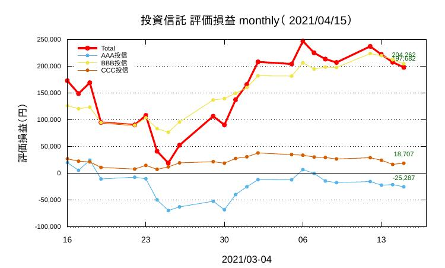

投資信託の評価損益を見える化する
目次
1 投資とLedger-cli
Ledger-cli の広範囲な使われ方の中で、 もちろんメインの領域は 経理・会計 分野ですが、 その他に 時間マネージメント や 在庫管理 などにも活用されています。
メインの領域の中でもLedgerを個人もしくは小規模な団体の 投資 モニターに使うのはいわば 王道 の一つです。投資管理のために有効な機能がいろいろと備わっています。
すでに「プレーンテキストファイルで「複式」家計簿（6）」で 株式 についてLedgerの基本的な機能を紹介しました。ここでは投資信託を例にとって投資の可視化例をお話します。
2 投資信託の「評価損益」の可視化
日々の「 基準価額 」は投資信託を提供している会社のホームページで公開されています。しかし「 評価損益 」、とくにその推移の可視化は個々人にまかされているというのが一般的かもしれません(注1)。
株式でも投資信託でも評価損益の計算そのものはとても簡単。使う計算は 加減乗除 だけなので、ユーザレベルで自分で使いやすく「見える化」するのは gnuplot などを使って自動的に作図することも含めて、さほど難しくはありません
投資信託を購入したときの基準価額（ 簿記単価 ）と本日の基準価額の差を求めて、 保有している「 口数 」を掛け算すれば当日の評価損益になります(注2)。
一つの例を上げます。
いま 架空の投信 を3種（AAA投信, BBB投信, CCC投信）保有しているとします。評価損益の推移は図1のようにプロットできます。

図1: 期間を1ヶ月に指定した場合の投資信託評価損益の推移。赤いラインは3投資信託の合計損益（架空の損益です）。
図1では期間幅（＝X軸）を1ヶ月にしていますが、起動時のオプションでweekly, monthly, 3months, 6months の中から一つを選択できるようにしてあります。3ヶ月分のデータをプロットするときのスクリプトの起動方法は次のとおりです。
$ time pnl-it-plotter 3 real 0m0.206s user 0m0.156s sys 0m0.069s
上のブロックでは time コマンドを使って起動から図が表示されるまでの所要時間も表示しています(注3)。コードの要点は下記 に紹介しました。
3 日々の基準価額をどうやって取得するか
株価の終値もそうですが投資信託の「基準価額」を毎日きちんと取得するにはそれなりの工夫が必要です。
一番簡単なのは、夕方に信託会社のホームページを見て当日の価額を 書きとめる 方法です。 保有する投資信託の本数が少数の場合には、この方法でもなんとかなります。 しかし「片手」近い数になると目で見て手で入力する方法はミスも起こるし現実的ではありません。
最も確実な方法は、 cron で定時的にホームページから curl を使って価額データベースに収納していく方法です。これも技術的な難易度は高くはありません。しかしその方法を公けにするのははばかられます。信託会社の顧客であっても、そのホームページから価額をスクレーピングすることが法律的に許容されるかどうか微妙な点がわが国（＝情報化における 極東のガラパゴス ）にはあります。
4 Ledgerの出番
さて実はここまでのプロセスにはLedgerの出番はありません。Ledgerが提供する .prices.db というコモディティの価格データベースを使っているだけです。
いったんこの価格データベースに日々の価額や株価が収納されれば、Ledgerはそれを使ってゲインやマーケット価格、元本などの情報を計算し抽出してくれます。 評価損益などの具体的な金額をコマンドラインから 瞬時 に得たい、そんな時にこそLedgerの本領とパワーが発揮されます。
5 ちょっとしたコツ
トランザクション内で投資信託をどう扱うかによって、 コマンドラインから投資信託の現状を把握する際の クエリ （検索・抽出コマンド）の方法がきまります。
Ledger内で投資信託の 名称 をハンドリングする方法は基本的には次の３つです。
- アカウント にする方法
- コモディティ にする方法
- タグの値(value) にする方法
汎用性があって使いやすく、多くのユーザが採用しているのは上の2)と3)を合わせた次のような方法です。
5.1 購入時の転記のしかた
ABC信託会社から 「AAA信託」を単価12,500円で40口、 合計金額＝500,000円で購入した。手数料は0円。
これを転記するには次のようにします。
2020/01/10 ABC信託会社
; fund: AAA信託
Expenses:Trusts:cmsn 0 JPY
Assets:Trusts 40 AAA信託 @ 12,500 JPY
Assets:abcBank -500,000 JPY
2行目で fund というタグに AAA信託 という値(value)を与えています。これは必須ではありませんがあとで検索のときにこのタグと値を使います。
4行目で AAA信託 が コモディティ （通貨単位commodity）のように使われています。
Ledgerのコモディティはとても広い概念です。この場合には
40 AAA信託 という形で資産を表現します。 @@ マークは合計金額を意味します。
5.2 評価損益のクエリ
評価損益（ゲイン）を得たいときには次のようにします：
$ ledger bal ^assets and trust --gain --account=commodity
-72,029 JPY AAA投信:Assets:Trusts
14,163 JPY BBB投信:Assets:Trusts
43,862 JPY CCC投信:Assets:Trusts
--------------------
-14,005 JPY
このコマンドラインクエリは短縮形にすると
$ led b ^assets and trust -G -a commodity になります。
投信の中から一つだけ抽出してゲインを得たいときにはさっきのタグと値(value)を使います。
$ ledger bal ^assets and trust and %fund=CCC --account=commodity --gain
43,862 JPY CCC投信:Assets:Trusts
%fund=CCC で fund というタグでかつ CCC という文字列を持つ値が抽出されます。どうしてもタグを使うのがいやな人は次のように --limit= を使えばタグ無しでのクエリが可能です。
$ ledger bal trust --limit="commodity =~ /CCC/" --gain
5.3 売却時の転記のしかた
「保有していたAAA信託の半分＝20口だけ売却（単価18,000円で）した」ときの転記は次のとおりです。
2021/04/10 ABC信託会社
; fund: AAA信託
Expenses:Trusts:cmsn 1,300 JPY
Assets:Trusts -20 AAA信託 @ 18,000 JPY
Assets:abcBank 358,700 JPY
6 Appendix: コードの要点
bashスクリプトとgnuplotのリテラシーを持っている方なら図1を見ただけですぐにかけるかと思いますが、自分への備忘もかねて要点だけ記しておきます。
6.1 bashパート
bashパートでは、投資信託名および簿記単価、口数を「3次元配列」っぽく(注4)データ化しておきます（数値は乱数です）。
fund_list=( "AAA 12090 111.9427" "BBB 11439 104.8205" "CCC 30125 28.5414" "DDD 13392 122.4732" "EEE 15298 130.9514" )
当日の価額は .prices.db から読み込みます。これで評価損益を算出します。投資信託の数が増えても（減っても）配列定義のパートだけを変更するだけで対応できます。
X軸の期間は入力された期間のキーワード（w,m,3,6）を case文 で仕分けます。
6.2 gnuplotパート
gnuplotのX軸関係のパラメータは全部変数化しておいてbashから引き継いでいます。
# 時間軸の設定
set xdata time
set timefmt "%Y%m%d"
set format x "${x_format}"
# xticsの設定
unset mxtic
set xtics format "${x_format}"
set xtics "${xtics1}", ${xtics2}, "${xtics3}"
set xtics font "Arial, 10"
# X軸の設定
set xrange ["${xrange1}":"${xrange3}"]
set xlabel '${xlabel}' font "Arial,12"
これ以外のパートは単純な折れ線グラフです。
各折れ線グラフの最終ポイントにだけ価格をラベルとして印字するところは次のように 三項演算子 を使っています：
：
'' using 1:((column(1)==${latest_date}) ? column(2): 1/0):(sprintf("%'d", column(2))) \
w labels font "Arial, 8" offset 0., +0.7 textcolor rgb "dark-green" notitle,\
：